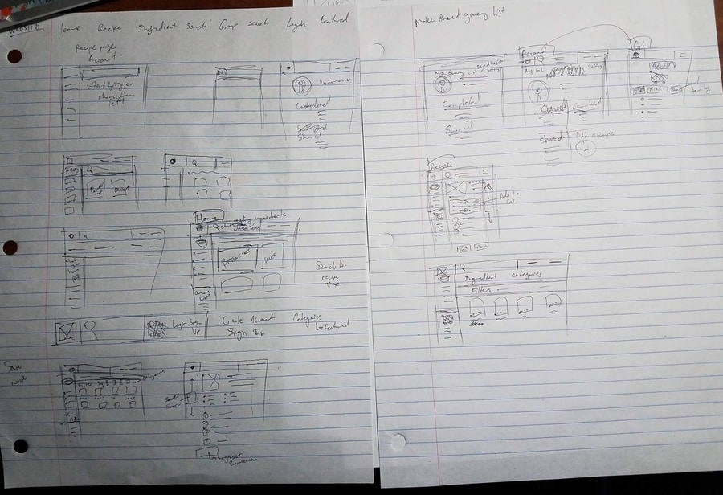

CookNook
Don't know what to cook? CookNook has your back.
Role
UX Designer, Content Strategist
Duration
July 2017 - September 2017
Team Size
7
Tools
Adobe XD | Affinity Designer
Medium Blog
Overview
CookNook is a website that generates possible recipes based on ingedients given by the user. Although similar applications already exist, there remains ample room for improvement. Besides redesigning user flows, we added a social component and grocery list function to CookNook to facilitate user efficiency.
Background
"What do I want for dinner? I can't go grocery shopping today."
Indecision and maximizing resourcefulness are two of the main challenges behind closed refridgerator doors. Users must parse inefficiently through recipe results from a maze of online sites, wasting time and energy searching for the perfect meal.
Challenge
Design a website or application to increase general efficiency in kitchen environments.
SIDENOTE: Since each team had a different focus, there was less emphasis on user research and more on rapid prototyping.
Needfinding
We first searched for an application idea by considering the various spheres of life (i.e. health, family, career, etc.) and what was potentially lacking in our own lives while prioritizing applicability. After bouncing around ideas focused on fitness and budgeting, we realized that food was a more accessible and generalizable topic.
As university students ourselves, the problem of cooking with a limited budget of both time and money was extremely relatable. Thus, CookNook was born: a customizable recipe compiler dependent on user ingredient input.
Competitor Analysis
Although competing designs were each fairly similar to our intended goal, none of them had the combined functionality in the way we envisioned our project.
Epicurious:
- Focus on food journalism
- Condescending recipe layout

Allrecipes:
- Mobile application
- Frustrating ingredient input
- Cluttered UI
Supercook:
- Minimalist ingredient input
- Lacks grocery list and social functions
With this information in mind, we could now work to chisel out a niche for CookNook.
Defining Our Framework
We individually created personas and storyboards to help us identify and empathize with our target audience, covering naive young adults to bustling mothers to the doting elderly.
This helped us brainstorm more features, such as a customizable grocery list and social groups within our framework. The social component was geared towards those such as families or culinary communities brought together by a love of food.
With such a broad demographic, we had to be mindful of the intuitiveness and accessibility of our eventual implementation. Since iterating can be an infinite process, our goal was to produce a highly polished interactive prototype with optional live implementation by the end of September.
User Testing
We performed two rounds of user testing to further converge on a final design, taking the strongest features from each of our prototypes to create the ultimate CookNook.
Round 1:
Low-Fidelity Prototype
I opted for a blockier layout for a clear and simple user-flow, based on our competitor analysis. This was later incorporated into CookNook's recipe page and ingredient list. While my design was straight to the point, it lacked the bit of pizazz that would make CookNook special.

User Feedback
Following each user testing session, we regrouped to discuss our observations and determine the successes and the pain points of each design. After some deliberation, we settled on a website application with a responsive column layout for broader usability and more intuitive user-flows.

The Final Stretch
We divided the high-fidelity wireframe to cover the breadth and depth of what we wanted to implement. I created a simple mockup of the ingredient input function while my teammates took care of the other menu items.
- Input ingredient --> Recipe results --> Add to Shopping List, Save for Later, View Full Recipe
After studying our wireframe, we created an interactive prototype on Adobe Xd while our developers started programming the live version of CookNook.
From this class, I learned the importance of communication and consistency within a team. Communicating and working across different platforms excluded some team members and led to confusion over how to proceed. Only when we finally sat down to discuss our final prototype were we able to better work towards a common purpose.